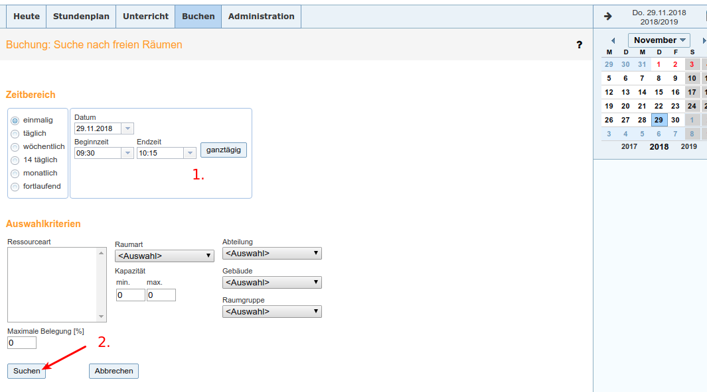
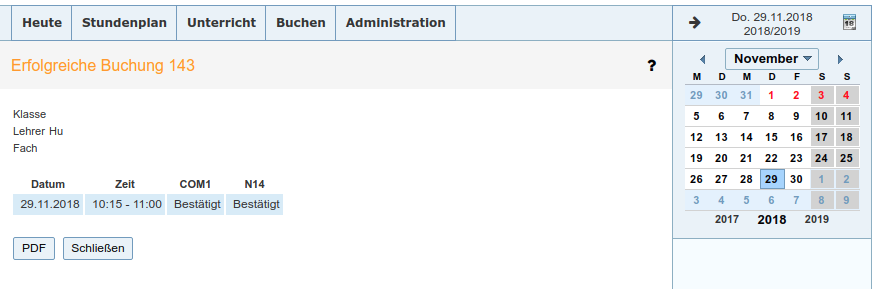
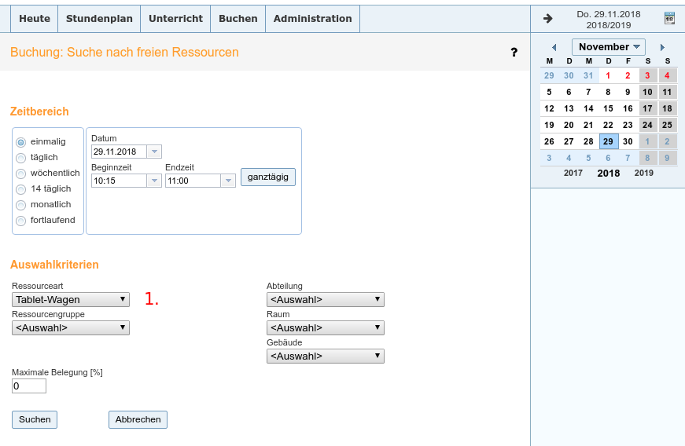
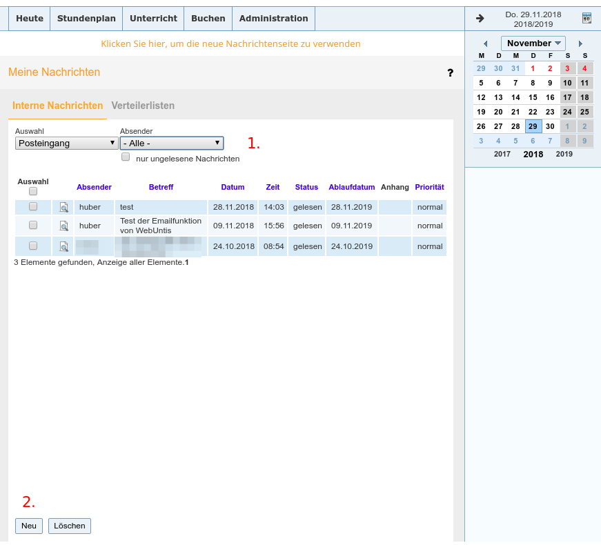

WebUntis¶
WebUntis ermöglicht Ihnen den Zugriff auf den Vertretungsplan, auf ihren eigenen Stundenplan, auf den Stundeplan ihre Klassen, auf die Raumbelegung etc. Außerdem können Sie mit WebUntis Räume buchen oder auch die TV-Wagen, Ipads etc reservieren. Das alte Raumbuchungssystem ist damit obsolet.
Zugriff auf WebUntis¶
WebUntis erreichen Sie über den Link auf der Homepage.
Mit einem Browser¶
Auf der Startseite müssen Sie sich anmelden, um die Möglichkeiten von WebUntis zu nutzen. Verwenden Sie hierzu ihre bekannten Daten, die Sie auch für die Anmeldung in den Computerräumen (Wlan, Copbox etc.) verwenden.

Mit der App¶
Es gibt auch eine App für WebUntis. Diese gibt es für iOS, Android und Windows. Wenn Sie die App herunterladen möchten klicken Sie auf eines der drei Symbole für die App (2.) und befolgen Sie die Anweisungen, die im folgenden Pop-Up-Fenster angezeigt werden. Hier finden Sie auch kurze Hinweise, wie die App konfigurert werden muss. Sie werden aufgefordert, die Schule auszuwählen, indem Sie den Namen der Schule eingeben. Danach müssen Sie sich mit ihren herkömmlichen Anmeldedaten anmelden und schon kann es losgehen.
Wichtig
Bitte beachten Sie: Es gibt zwei Apps für WebUntis. Eine ist kostenlos und bietet nur einen eingeschränkten Funktionsumfang. Unter Umständen wird Ihnen beim Klick auf eine Funktion, die nicht in der Basis-Version verfügbar ist, die „WebUntis Mobile Premium“-App angeboten, die im Moment mit 4,99€ jährlich zu Buche schlägt. Ob Sie das Premium-Angebot nutzen möchten, bleibt Ihnen selbst überlassen. Mittels eines normalen Browsers auf PC, Laptop, Smartphone oder Tablet können Sie WebUntis vollumfänglich nutzen.

Einrichtung der App:¶
Öffnen Sie die App, klicken Sie auf „Profil hinzufügen“.

Geben Sie im Suchfeld den Namen der Schule ein.

Wichtig
Auf Verwechslungen achten ( es gibt auch ein Copernicus-Gymnasium in Löningen)
Arbeiten mit WebUntis¶
Wenn Sie sich angemeldet haben, gelangen Sie zu einer Übersichts-Seite, über die alle Funktionen von WebUntis erreichbar sind. Wenn Sie auf eine der Schaltflächen 1 bis 3 klicken, öffnet sich ein Drop-down Menu, der Ihnen verschiedenen Optionen anbietet.

1. Stundenplan¶

Klicken in diesem Menu auf „Lehrer“, wird Ihnen ihr eigener Stundenplan für die laufende Woche angezeigt. Vertretungen, Aufsichten etc. sind hier schon eingetragen.

Sind in einem Feld ein kleines Ausrufezeichen oder drei kleine Punkte am rechten Rand zu erkennen, heißt das, dass zu dieser Stunde weitere Informationen vorliegen, Mit einem Klicke darauf, werden Ihnen diese angezeigt. Ein Klicken auf der große X oben rechts schließt die Übersicht mit den zusätzlichen Informationen und bringt sie zurück zu Ihrem Stundenplan.
Wichtig
Unten rechts ist Uhrzeit der Erstellung des Stundenplans zu sehen (3.).
In der grauen Leiste unterhalb des Menus stehen Ihnen weitere Ansichten zur Verfügung (1.). Auch hier können Sie auswählen, wonach Sie suchen. ( Wie bei 2.)
2. Unterricht¶
Auch in diesem Bereich können Sie sich gezielt bestimmte Informationen anzeigen lassen. Es werden verschiedene Drop-down Menus angeboten, die Ihnen helfen, das Gesuchte anzuzeigen.

3. Buchen¶
Räume buchen¶
Mit der Einführung von WebUntis wird das bislang verwendetet Raumbuchungssystem obsolet. Alles, was sie dort buchen konnten, müssen Sie jetzt hier buchen.
Wichtig
Das handschriftliche Ausfüllen einer Benachrichtigung über den von Ihnen gebuchten Raum entfällt, da ihre Buchung hier direkt an die Schulleitung weitergeleitet wird.

- Wählen Sie das Datum und die Uhrzeit und gegebenenfalls den entsprechenden Intervall, wenn es sich um eine sich wiederholende Buchung handelt. Standardmäßig ist hier „einmalig“ voreingestellt.
Wichtig
Unterricht, den sie immer in z.B. einem der Computerräume abhalten, müssen Sie nicht selbst buchen. Die Räume sind bereits für Sie gebucht (sollten es sein), wie Sie in der Übersicht zu ihrem Stundenplan erkennen können.
2. Sie müssen nach der Eingabe das gewünschten Datums keine weitere Auswahl treffen. Die verschiedenen Drop-down-Menus im unteren Bereich der Seite können Sie ignorieren. Klicken Sie auf „Suchen“. Im nächsten Schritt werden Ihnen alle Räume angezeigt, die zu der von Ihnen gewählten Zeit verfügbar sind.
Sie sollten jetzt eine Auswahl aller Räume sehen, die zu der von Ihnen gewählten Uhrzeit frei sind.

- Setzen Sie ein Häkchen neben dem gewünschten Raum
- Klicken Sie „weiter“, wenn sie sicher sind, dass sie den richtigen Raum ausgewählt haben.
Wichtig
Bitte beachten Sie: Bleibt das Auswahlfenster leer, ist zu der von Ihnen gewünschten Uhrzeit kein Raum verfügbar!
- Im letzten Schritt geben Sie bitte unter „Klasse“ die Klasse an, mit der Sie den Raum benutzen.
- Geben Sie unter „Bemerkungen“ weitere Informationen an.
- Sie können zum Schluss noch auswählen, ob Sie bei einer Statusänderung ihre Buchung eine Mail erhalten wollen, oder ob sie einen bestimmten Kollegen über die Buchung informieren möchten.
- Wenn Sie auf „speichern“ klicken, ist der Raum gebucht.

Zum Abschluss wird Ihnen noch eine Zusammenfassung Ihrer soeben getätigten Buchung angezeigt, die Sie sich mit einem Kick auf „pdf“ auch herunterladen können (1.), wenn Sie das möchten. Ansonsten klicken Sie auf „Schließen“, um zurück auf die Startseite zu gelangen.
Sollte Ihnen bei der Buchung ein Fehler unterlaufen sein oder Ihnen ist aufgefallen, dass die den Raum doch nicht buchen möchten, können Sie eine Buchung auch wieder ändern oder ganz rückgängig machen.
Wichtig
Bitte beachten Sie, dass sie einen Raum nur dann buchen, wenn Sie ihn auch benutzen möchten. Geben Sie einen Raum, den sie gebucht haben aber nicht verwenden wollen, bitte wieder frei, damit anderen Kollegen dieser Raum wieder zur Verfüfung steht. Einen Raum zu blockieren, ist egoistisch.
Klicken Sie hierzu im Bereich „Buchen“ auf der Startseite auf „Meine Buchungen“. Sie gelangen zu folgender Seite, auf der Sie Ihre Buchungen bearbeiten können.

- Haben Sie sehr viele Buchungen vorgenommen, suchen Sie hier nach der entsprechenden Buchung. Dazu klicken Sie auf den kleinen Trichter neben der Schaltfläche „Suche ausführen“. Es öffnet sich ein Pop-up-Fenster, in dem Sie verschiedene Möglichkeiten haben, die gesuchte Buchung zu finden (Raum, Zeit etc.). Ansonsten sehen Sie eine Liste ihrer Buchungen.
- In der zweiten Spalte haben Sie die Möglichkeit, einen Buchung zu bearbeiten. Ein Klick auf das Stiftsymbol und Sie können die Buchung ändern. Mit einem Klick auf das rote X und Sie können die Buchung löschen. Vor der endgültigen Löschung werden Sie zur Bestätigung der Löschung aufgefordert.
Klicken Sie auf „ok“, um die Buchung endgültig zu löschen.
3. Ipdas, TV-Wagen, Visualizer buchen¶
Ipdas, TV-Wagen und Visualizer können Sie buchen, wenn Sie im Bereich „Buchen“ auf „Ressource buchen“ klicken. In der Übersicht wählen Sie bitte unter „Ressourceart“ die Ressource, die sie buchen wollen (1.). Das weitere Vorgehen ist analog zur Raumbuchung.
4. Meine Nachrichten¶
Im diesem Bereich können Sie anderen Kollegen eine Nachricht schreiben. Die Dienst-Emailadressen aller Kollegen sind hier hinterlegt.
Im mittleren Bereich sehen Sie standardmäßig den Posteingang.
- Im oberen Bereich können Sie die Ansicht des verschiedenen Postfächer (Posteingang, Entwürfe, Gesendet) auswählen und rechts davon die Absender. So können Sie sich bestimmte Nachrichten anzeigen lassen.
- Wollen Sie eine neue Nachricht verfassen, klicken sie im unteren Bereich auf die Schaltfläche „Neu“.
In diesem Fenster können Sie einem anderen Kollegen oder einer Gruppe von Kollegen eine Nachricht schicken. Die Verwendung ist analog zu jedem anderen Email-Programm oder Web-Mailer, den Sie kennen.
- Hier sind ein paar Verteilerlisten voreingestellt, die sie aber nach Belieben weiter einschränken können.
- Suchen Sie hier nach dem Benutzer, dem Sie eine Mail schreiben möchten.
- Hier schreiben Sie die Mail und geben den Betreff an.
- Wenn Sie einen Anhang mitschicken möchten, klicken Sie auf „Dateiablage“.
- klicken Sie auf „Speichern“, wenn Sie die Mail in „Entwürfe“ speichern möchten oder klicken Sie „Senden“, um die Nachricht zu verschicken.